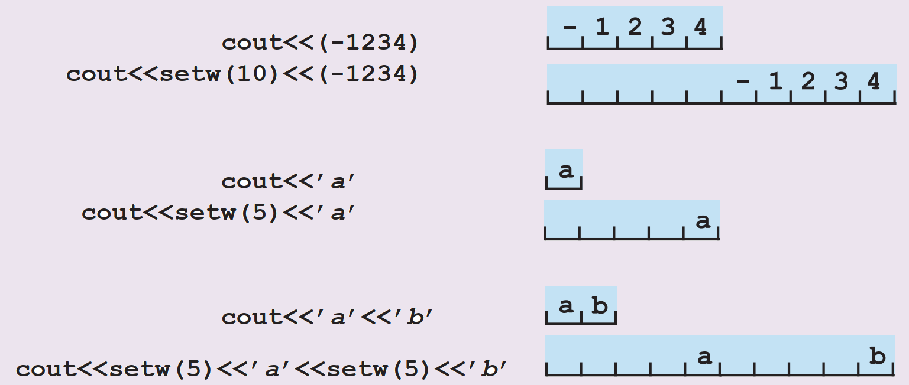

Instrucțiunile de citire (CIN)/ afișare (COUT)
Orice program ce realizează rezolvarea unei probleme are nevoie de comunicare cu utilizatorul. Acest
lucru este efectuat cu ajutorul instrucțiunilor speciale de intrare/ ieșire (I/O): citirea datelor
de la tastatură și afișarea rezultatelor pe ecran. Limbajul C++ la fel prevede utilizarea
instrucțiunilor
respective.
Pentru citirea datelor de la tastatură se utilizează comanda CIN (Console INput).
Pentru afișarea datelor pe ecran se utilizează comanda COUT (Console OUTput).
Pentru citirea datelor de la tastatură se utilizează comanda CIN (Console INput).
Pentru afișarea datelor pe ecran se utilizează comanda COUT (Console OUTput).
Sintaxa CIN:
cin>>variabila;Exemplu:
- cin>>a;
- Valoarea întrodusă de la tastatură va fi memorată în variabila cu denumirea a
Se permite citirea a mai multor valori, pentru fiecare se indică variabila respectivă.
cin>>x1>>x2>>x3;
În așa caz fiecare variabilă se separă prin simboluri '>>'.
cin>>x1>>x2>>x3;
În așa caz fiecare variabilă se separă prin simboluri '>>'.
Rețineți!
1. Valorile citite de la tastatură trebuie să corespundă după tip variabilelor indicate, altfel va
apărea o eroare!
2. Variabilă utilizată la citire obligatoriu trebuie declarată!
3. Fiecare valoare întrodusă trebuie separată fie prin spațiul, fie prin Enter.
2. Variabilă utilizată la citire obligatoriu trebuie declarată!
3. Fiecare valoare întrodusă trebuie separată fie prin spațiul, fie prin Enter.
Verifică cunoștințele:
Sintaxa COUT:
cout<<data<<endl;Exemplu:
- cout<<a<<endl;
- Valoarea variabilei a va fi afișată pe ecran. După afișarea valorii se va face trecerea la rândul următor.
1. În calitate de data poate fi prezentă orice constantă, orice variabilă, orice expresie valoarea
căreia se cere să fie afișată.
2. Utilizarea manipulatorului endl este opțională (neobligatorie).
Exemplu:
- cout<<"Introdu data";
- Se afișează pe ecran șir de caractere: Introdu data, fiind constantă caracterială
- cout<< 123;
- Se afișează pe ecran valoarea 123, fiind constantă întreagă
- cout<<(3*5);
- Se afișează pe ecran rezultatul expresiei 15, înainte de afișare se realizează calculul expresiei indicate
Atenție!
Implicit toate afișările a valorilor se fac aliniate în partea stânga-sus.
Diverse probleme ne impun situații de afișare nestandardă ce țin de afișare dictată la anumite poziții. Pentru a putea realiza acest lucru limbajul C++ ne oferă unele facilități.
Manipulatorul setw(n) specifică numărul de poziții rezervate pentru afișarea valorii ordinale, valoarea fiind aliniată în dreaptă acestei zone rezervate, fapt ce permite amplasarea dacă rămân pozițiilor libere în fața valorii.
Diverse probleme ne impun situații de afișare nestandardă ce țin de afișare dictată la anumite poziții. Pentru a putea realiza acest lucru limbajul C++ ne oferă unele facilități.
Manipulatorul setw(n) specifică numărul de poziții rezervate pentru afișarea valorii ordinale, valoarea fiind aliniată în dreaptă acestei zone rezervate, fapt ce permite amplasarea dacă rămân pozițiilor libere în fața valorii.
Exemplu:

Pentru afișarea valorilor de tip float apare necesitate de precizarea în afară de numărului de
poziții în general pentru afișarea valorii și a numărului de poziții în special pentru
afișarea părții fracționale(zecimale/după virgulă).
Pentru acest lucru limbajul C++ prevede utilizarea unor funcții speciale de format: fixed, showpoint, setprecision(n).
fixed - forțează afișarea în forma zecimală a numărului
showpoint - forțează afișarea punctului zecimal ce va separa partea întreagă de la cea zecimală
setprecision(n) - n - indică numărul de cifre zecimale afișate (este necesară includerea bibliotecii <iomanip>).
Pentru acest lucru limbajul C++ prevede utilizarea unor funcții speciale de format: fixed, showpoint, setprecision(n).
fixed - forțează afișarea în forma zecimală a numărului
showpoint - forțează afișarea punctului zecimal ce va separa partea întreagă de la cea zecimală
setprecision(n) - n - indică numărul de cifre zecimale afișate (este necesară includerea bibliotecii <iomanip>).
Exemplu:
- cout<<fixed<<showpoint<<setprecision(2)<< 3.14159;
- Pe ecran se va afișa valoarea 3.14
Mai multe informații despre formate de afișare puteți găsi în sursele suplimentare
PbInfo
și CursSuplimentar
Sarcina:
Elaborați un program ce va realiza: Afișarea pe ecran a numărului 10 pe 5 poziții, literei 'A' pe 7 poziții
și numărului 4.23517 pe 6 pozitii cu 2 cifre după virgulă.
Pentru realizarea sarcinii puteți utiliza zona de mai jos a editorului.
Pentru realizarea sarcinii puteți utiliza zona de mai jos a editorului.